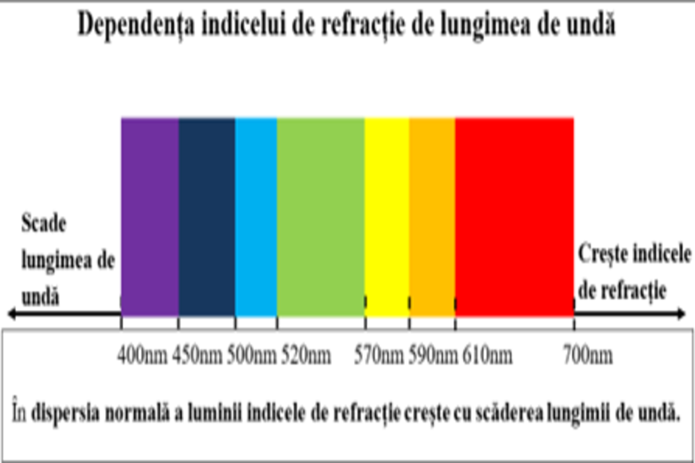

Introducere în curs
Dispersia luminii. Prisma optică.
Obiectivele lecției
Bine ați venit la lecția despre dispersia luminii și prisma optică. Această lecție este destinată elevilor de clasa a XI-a și are scopul de a vă familiariza cu fenomenele optice asociate cu dispersia luminii și utilizarea prismelor optice.
Obiectivele lecției:La finalul acestei lecții, elevii vor fi capabili să:
Înțeleagă ce este dispersia luminii.
Explice cum funcționează o prismă optică.
Aplice conceptele de dispersie și prismă optică în diferite situații practice.
Introducere în Dispersia Luminii
Dispersia luminii poate fi definită ca separarea unei raze de lumină albă în componentele sale spectrale de diferite culori, cauzată de diferențele în refracția acestor culori la trecerea printr-un mediu. Lumina albă, cum ar fi cea de la soare, este compusă dintr-un spectru continuu de culori care, atunci când sunt combinate, apar albe pentru ochiul uman. Când această lumină trece printr-un mediu dispersiv, cum ar fi o prismă sau o picătură de apă, componentele de culoare ale luminii sunt refractate (îndoite) la unghiuri diferite datorită diferențelor în indicii lor de refracție. Aceasta duce la formarea unui spectru vizibil de culori, similar curcubeului: roșu, oranj, galben, verde, albastru, indigo și violet.
Dispersia luminii este fenomenul de variaţie a indicelui de refracţie n al mediului în funcţie de lungimea de undă λ a radiaţiei luminoase : n=n(λ)
Dispersia luminii a fost studiată intens de-a lungul istoriei, cu Isaac Newton jucând un rol esențial în dezvăluirea mecanismelor acestui fenomen. Prin experimentele sale cu prisme, Newton a demonstrat că lumina albă poate fi descompusă în spectrul vizibil și că aceste culori pot fi recombinate pentru a reface lumina albă. Această descoperire a fost fundamentală pentru dezvoltarea ulterioară a opticii și a teoriei culorilor.
Teoria Dispersiei
Legile refracției (Legile lui Snell):
În această secțiune, vom discuta legile refracției, cunoscute sub numele de legile lui Snell, procesul de refracție a luminii prin diferite medii și dependența indicelui de refracție de lungimea de undă a luminii.
Legile refracției, formulate de matematicianul olandez Willebrord Snellius în secolul al XVII-lea, descriu modul în care o rază de lumină se comportă atunci când trece de la un mediu transparent la altul. Aceste legi sunt fundamentale pentru înțelegerea fenomenului de dispersie.
Prima lege a refracției:Această lege afirmă că incidenta, refracția și normalul la suprafața de separare a celor două medii sunt toate în același plan. În termeni simpli, aceasta înseamnă că atunci când o rază de lumină lovește suprafața de separare dintre două medii, unghiul de incidență (𝜃1) și unghiul de refracție (𝜃2) sunt măsurate față de normală (o linie perpendiculară pe suprafață).
A doua lege a refracției (Legea lui Snell):Legea lui Snell exprimă relația matematică dintre unghiul de incidență, unghiul de refracție și indicii de refracție ai celor două medii. Formula este: 𝑛1sin 𝜃1 – 𝑛2sin 𝜃2 unde 𝑛1 este indicele de refracție al primului mediu, n2 este indicele de refracție al celui de-al doilea mediu, θ1 este unghiul de incidență, θ2 este unghiul de refracție.
Această lege arată că raportul dintre sinusul unghiului de incidență și sinusul unghiului de refracție este constant și egal cu raportul indicilor de refracție ale celor două medii.
Refracția luminii prin diferite medii:
Refracția luminii apare atunci când o rază de lumină trece de la un mediu la altul cu un indice de refracție diferit, determinând schimbarea direcției razei. Acest fenomen poate fi observat în numeroase situații cotidiene, de exemplu, atunci când privim un obiect sub apă și acesta pare a fi deplasat față de poziția sa reală.
Refracția la suprafața aer-apă:
Când lumina trece de la aer (cu un indice de refracție 𝑛 𝑎𝑒𝑟≈1.00) la apă (cu un indice de refracție 𝑛 𝑎𝑝𝑎≈1.33), aceasta încetinește și se refractă spre normală. Unghiul de refracție este mai mic decât unghiul de incidență, conform legii lui Snell.
Refracția la suprafața aer-sticlă:
Un fenomen similar apare atunci când lumina trece de la aer la sticlă (cu un indice de refracție 𝑛 𝑠𝑡𝑖𝑐𝑙𝑎≈1.5). Lumina încetinește și se refractă spre normală, iar unghiul de refracție este mai mic decât unghiul de incidență. Datorită indicelui de refracție mai mare al sticlei, devierea este mai pronunțată decât în cazul apei.
Refracția la suprafața apă-sticlă:
Când lumina trece de la apă la sticlă, schimbarea indicelui de refracție este mai mică comparativ cu trecerea de la aer la sticlă, dar lumina se refractă totuși spre normală. În acest caz, unghiul de refracție este încă mai mic decât unghiul de incidență, dar diferența este mai subtilă.
Dependența indicelui de refracție de lungimea de undă a luminii:
Indicele de refracție al unui material nu este o constantă universală, ci variază în funcție de lungimea de undă a luminii care trece prin el. Aceasta este cunoscută sub numele de dispersie cromatică. În general, indicele de refracție al unui material scade pe măsură ce lungimea de undă a luminii crește, ceea ce înseamnă că lumina de diferite culori este refractată la unghiuri diferite.
Prisma Optică
Prismele optice sunt dispozitive optice transparente, adesea din sticlă sau cristal, care sunt folosite pentru a dispersa lumina albă în culorile sale componente și pentru a studia spectrele optice. În această secțiune, vom explora structura și funcționarea unei prisme optice, precum și formula de dispersie prin prisma, care descrie modul în care unghiurile de deviere variază în funcție de lungimea de undă a luminii.
Structura și funcționarea unei prisme optice:
O prismă optică este un mediu transparent mărginit de doi dioptri plani ce se intersectează după o dreaptă, muchia prismei. Unghiul diedru format de cele două plane este unghiul prismei numit unghi de refrigență. O secțiune principală în prismă reprezintă secțiunea perpendiculară pe muchia acesteia.
Forma prismei și indicele de refracție al materialului din care este făcută determină unghiurile de refracție pentru fiecare lungime de undă a luminii. Prisma separă lumina albă în componentele sale spectrale datorită dispersiei cromatice, care face ca fiecare culoare să fie refractată la un unghi diferit. Fasciculele colorate trec prin prismă cu viteze diferite și de aceea ies din prismă sub unghiuri diferite. Lumina violet, având cea mai mică lungime de undă, este refractată cel mai mult, în timp ce lumina roșie, având cea mai mare lungime de undă, este refractată cel mai puțin. Acest efect creează un spectru de culori la ieșirea din prismă.
Formula de dispersie prin prismă:
Formula de dispersie prin prisma optică este utilizată pentru a calcula unghiul de deviere al luminii și, implicit, modul în care lumina albă este dispersată în culorile sale componente atunci când trece printr-o prismă. Această formulă este esențială pentru proiectarea și interpretarea experimentelor optice care implică prisme.
Unghiul de deviere minimă:
Unghiul de deviere minimă (𝛿𝑚) este unghiul la care se produce devierea maximă a luminii pentru o anumită lungime de undă. Acest unghi este determinat de relația dintre unghiul de incidență și unghiul de refracție în prisma optică.
Formula de dispersie:
Formula de dispersie prin prisma optică este dată de relația: δm =(μ−1)A unde: δm este unghiul de deviere minimă, μ este indicele de refracție al materialului prismei, A este unghiul de prismă (unghiul dintre fețele de intrare și ieșire ale prismei).
Această formulă arată că unghiul de deviere minimă prin prisma optică este proporțional cu indicele de refracție al materialului și unghiul de prismă al acesteia. Cu cât indicele de refracție al materialului este mai mare și cu cât unghiul de prismă este mai mare, cu atât devierea luminii va fi mai mare.
Experimente
Experimentele lui Newton:
Isaac Newton a efectuat numeroase experimente clasice care au demonstrat dispersia luminii. Un experiment simplu implica trecerea unui fascicul de lumină albă printr-o prismă de sticlă și observarea spectrului de culori rezultat. Newton a arătat că fiecare culoare componentă a luminii albe este refractată la un unghi diferit, ceea ce duce la formarea unui spectru.
Newton a efectuat și experimente suplimentare pentru a demonstra că spectrul de culori poate fi recombinat pentru a reface lumina albă. Acest lucru a fost realizat prin trecerea spectrului de culori printr-o a doua prismă, care le refracta din nou, unindu-le într-un fascicul de lumină albă. Aceste experimente au confirmat că lumina albă este compusă din toate culorile spectrului vizibil.
Experimente Moderne:
Experimentele moderne privind dispersia luminii implică utilizarea unor tehnologii avansate și echipamente precise. Spectrofotometria este o tehnică utilizată pentru a măsura și analiza spectrele de absorbție și emisie ale materialelor. Aceste experimente oferă informații detaliate despre compoziția chimică și proprietățile fizice ale materialelor studiate.
Un alt experiment modern implică utilizarea grilelor de difracție, care sunt dispozitive optice cu o serie de fante paralele. Când lumina trece prin aceste fante, este dispersată într-un spectru de culori datorită interferenței constructive și destructive a undelor luminoase. Grilele de difracție sunt utilizate frecvent în spectroscopie pentru a separa și analiza componentele spectrale ale luminii.
Aplicații Practice
Astrofizică:
Dispersia luminii este esențială în astrofizică, unde spectroscopia este utilizată pentru a studia compoziția și proprietățile stelelor, galaxiilor și altor obiecte cosmice. Analiza spectrelor luminoase emise sau absorbite de aceste obiecte oferă informații valoroase despre temperaturile, compozițiile chimice și mișcările acestora.
Chimie și Biologie:
În chimie, dispersia luminii este utilizată în analiza spectroscopică pentru a determina compoziția și structura moleculelor. Tehnicile spectroscopice, cum ar fi spectroscopia de absorbție atomică și spectroscopia Raman, se bazează pe dispersia luminii pentru a furniza informații detaliate despre substanțele chimice.
În biologie, spectroscopia de fluorescență și microscopie spectroscopică sunt utilizate pentru a studia structura și funcția celulelor și biomoleculelor. Aceste tehnici permit vizualizarea și analiza proceselor biologice la nivel molecular, contribuind la înțelegerea mecanismelor fundamentale ale vieții.
Tehnologie și Inginerie:
În tehnologie, dispersia luminii este aplicată în dezvoltarea și optimizarea dispozitivelor optice, cum ar fi laserele, LED-urile și senzori optici. În inginerie, principiile dispersiei sunt utilizate pentru a proiecta sisteme de iluminat eficiente și pentru a dezvolta soluții avansate în telecomunicații.
Medicină:
În medicină, tehnicile de imagistică optică, cum ar fi tomografia cu coerență optică (OCT), se bazează pe principiile dispersiei luminii pentru a produce imagini de înaltă rezoluție ale structurilor interne ale corpului. Aceste tehnici sunt utilizate în diagnosticarea și monitorizarea unei game largi de afecțiuni medicale, de la boli oculare la cancer.
Test de Evaluare
Întrebări de verificare a cunoștințelor:
1. Care sunt legile refracției, cunoscute și sub numele de legile lui Snell?
2. Ce se întâmplă cu lumina atunci când trece printr-o prismă optică?
3. Cum este determinat unghiul de deviere minimă al luminii prin prisma optică?
4. Ce este dispersia cromatică și cum este ea implicată în fenomenul de dispersie a luminii prin prismă?
5. Care este importanța aplicativă a prismelor optice în domeniul științific și tehnologic?
6. Ce este formula de dispersie și cum este ea utilizată în studiul prismelor optice?
7. Cum variază unghiul de deviere minimă al luminii într-o prismă optică în funcție de unghiul de prismă și de indicele de refracție al materialului?
8. Ce este unghiul de deviere minimă și de ce este important în contextul dispersiei luminii prin prisme?
9. Care sunt principalele etape ale funcționării unei prisme optice în dispersia luminii?
Notă:Toate răspunsurile la întrebările din acest test pot fi găsite în PDF-ul cursului.